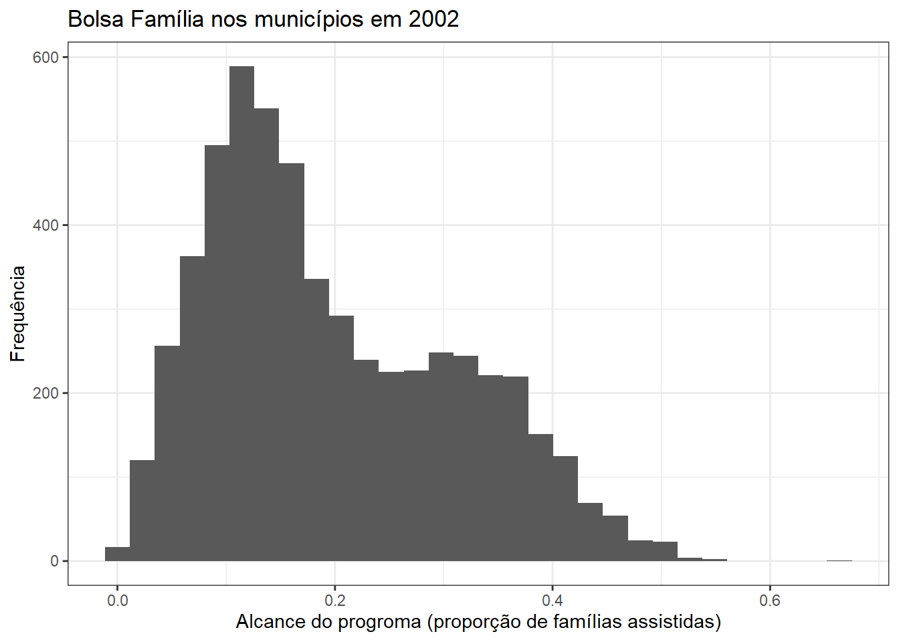
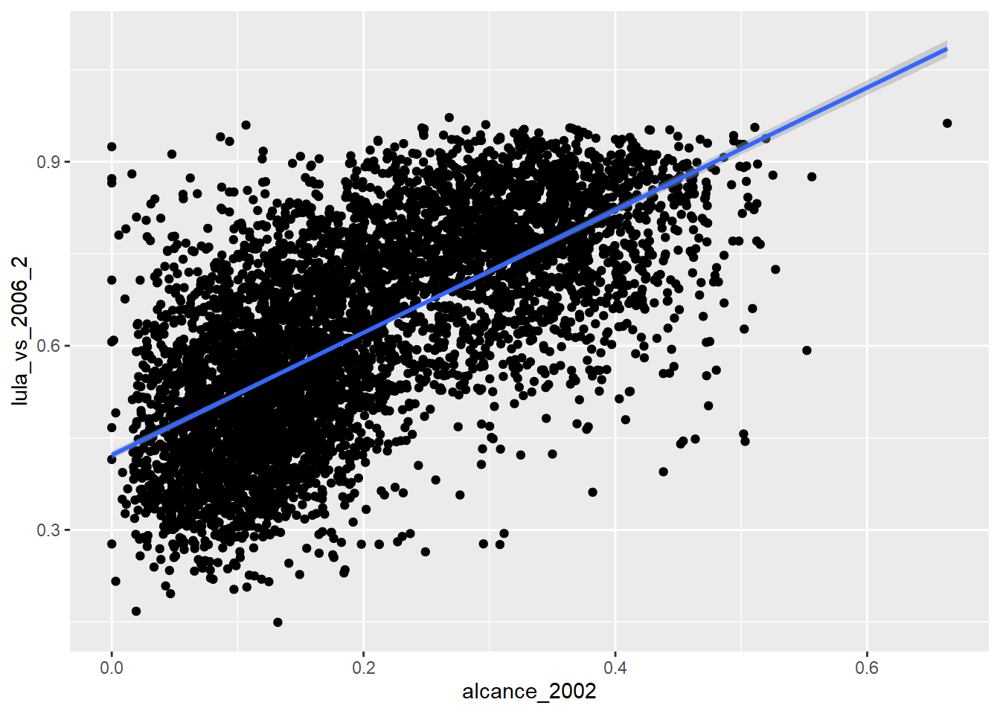
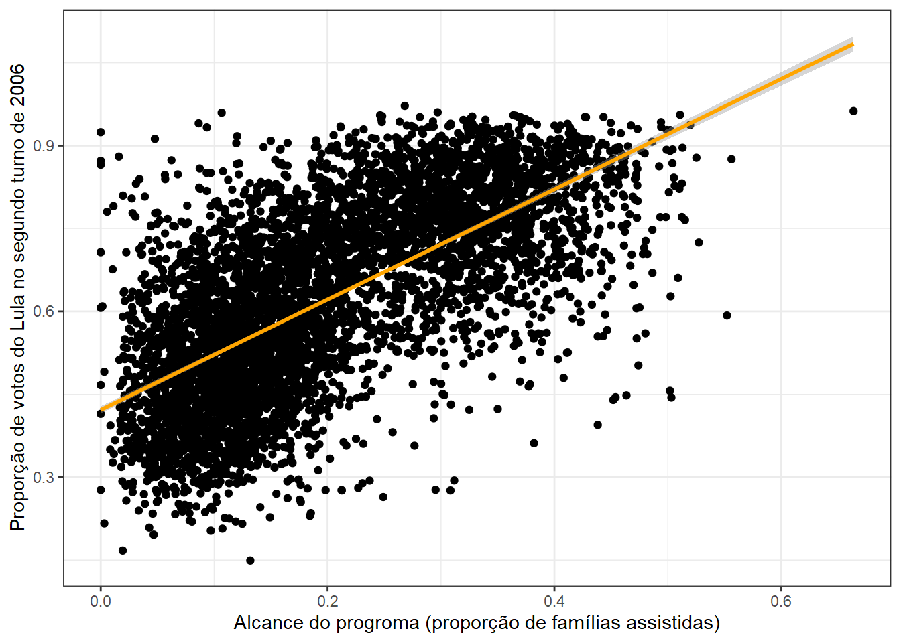

Aula 5 Projetos
1 Introdução
Começamos esse curso focando em algumas das coisas que o R faz de melhor: leitura, manipulação e análise de dados. Aliado ao tidyverse, vimos que essas tarefas podem ser resumidas em verbos que, combinados, executam complexas sequências de operações. Carregamos arquivos; selecionamos variáveis e observações, criamos e alteramos outras; cruzamos bancos, os reordenamos; entre outros. Falta aprendermos a reportar resultados. É isso o que essa aula cobre, amarrando o conteúdo das anteriores.
2 Estatísticas
Sabemos que mean serve para calcular a média de um vetor ou variável, e que median serve para calcular medianas. Basta fazer isso:
# Crio um vetor com 100 numeros aleatorios
v <- rnorm(100)
# Calculo sua media e mediana
mean(v)
median(v)Isso, no entanto, não é tão útil quanto calcular média e mediana, ou outras estatísticas descritivas simples, de variáveis reais. Nesta aula, trabalharemos com um banco de dados sobre a relação entre a cobertura do programa de transferência condicional de renda Bolsa Família e resultados eleitorais em 5.564 municípios brasileiros. Esses dados foram usados em When Payouts Pay Off: Conditional Cash Transfers and Voting Behavior in Brazil 2002–10, paper feito por Cesar Zucco Jr e publicado na American Journal of Political Science em 2013. O banco está no arquivo bolsafamiliadataset.dta.
# Carrega os pacotes
library(tidyverse)
library(haven) # para carregar arquivos do Stata
# Carrega o banco
bolsa <- read_dta("bolsafamiliadataset.dta")Com os dados na memória, podemos explorá-los com algumas funções que já usamos antes:
# Estrutura do banco
glimpse(bolsa)
# As primeiras linhas
head(bolsa)E também podemos saber o nome de suas 70 variáveis:
names(bolsa)As variáveis que mais nos interessam aqui, claro, são alcance_2002, alcance_2006 e alcance_2010, que registram a proporção de famílias de um dado município beneficiadas pelo Bolsa Família em determinado ano eleitoral.
Como calculamos estatísticas descritivas para elas? Até agora, usamos summarise para fazer isso:
# Usamos summarise para calcular estatisticas descritivas
summarise(bolsa,
media_alcance_2002 = mean(alcance_2002, na.rm = T),
media_alcance_2006 = mean(alcance_2006, na.rm = T),
media_alcance_2010 = mean(alcance_2010, na.rm = T)
)E poderíamos fazer o mesmo com o desvio-padrão:
summarise(bolsa,
desvio_alcance_2002 = sd(alcance_2002, na.rm = T),
desvio_alcance_2006 = sd(alcance_2006, na.rm = T),
desvio_alcance_2010 = sd(alcance_2010, na.rm = T)
)Isso é útil para consulta, e também flexível porque nos permite usar várias funções para calcular estatísticas descritivas. Aí vão alguns exemplos de outras funções:
summarise(bolsa,
mediana_alcance_2002 = median(alcance_2002, na.rm = T),
maximo_alcance_2002 = max(alcance_2002, na.rm = T),
minimo_alcance_2002 = min(alcance_2002, na.rm = T),
maximo_alcance_2002 = max(alcance_2002, na.rm = T),
quantil_90 = quantile(alcance_2002, 0.9, na.rm = T),
quantil_95 = quantile(alcance_2002, 0.95, na.rm = T)
)Também útil para consulta, podemos usar gráficos – um histograma – para plotar a distribuição dessas variáveis:
ggplot(bolsa, aes(x = alcance_2002)) +
geom_histogram() +
labs(x = "Alcance do progroma (proporção de famílias assistidas)",
y = "Frequência",
title = "Bolsa Família nos municípios em 2002") +
theme_bw() # altera o tema do grafico
2.1 Tabelas descritivas
Por mais que esses procedimentos sejam úteis para consulta, há um lado negativo neles: não podemos exportar essas estatísticas e gráficos de forma direta (na aula passada, vimos como exportar gráficos para o arquivo, entretanto).
Felizmente, existe uma série de pacotes que fazem isso, criando tabelas prontas para serem exportadas para Word ou outros. O que usaremos aqui chama-se stargazer. Vamos instalá-lo:
# Instala o pacote
install.packages("stargazer")A principal funcionalidade dele é pegar um banco de dados e retornar uma tabela com as estatísticas descritivas das variáveis que o compõe:
# Carregamos o pacote para podermos usar suas funcoes
library(stargazer)
# Selecionamos apenas algumas variaveis
bolsa_menor <- select(bolsa, alcance_2002, alcance_2006, alcance_2010)
bolsa_menor <- as.data.frame(bolsa_menor) # aplicamos isso para forcar uma classe unica (algo padrao)
# Gera uma tabela
stargazer(bolsa_menor, type = "text")O resultado é uma tabela formatada. Mas e se quisermos exportar ela para Latex?
stargazer(bolsa_menor, type = "latex")O mais interessante é que podemos usar o stargazer para criar um arquivo contendo a tabela, basta usar o argumento out especificando o nome do arquivo que queremos criar.
stargazer(bolsa_menor, type = "text", out = "tabela1.txt")Se abrirmos agora o diretorio de trabalho, veremos que temos um arquivo tabela1.txt com a tabela salva. O ponto ruim disso é que essa tabela não pode ser copiada e colada diretamente para Word (afinal, ela pe feita inteiramente de caracteres, sem linhas e separação de colunas).
Para exportar tabelas para o Word, usaremos outra abordagem, que consiste em exportar a tabela para HTML, abrir ela num navegador (como o Chrome) para, entao, copiar e colar seu conteúdo no Word, sem perder detalhes de formtação
stargazer(bolsa_menor, type = "html", out = "tabela1.html")Para quem usa Rmarkdown, obviamente isso não é necessário: podemos gerar uma tabela dentro de um chunk e mantê-la inteira no documento final que criarmos.
3 Modelos
Modelos de regressão, bivariados ou multivariados, lineares ou generalizados, são úteis para resumir relações nos dados e fazer inferências. O R contém diversas funções e pacotes para rodar esses modelos, e nesta seção cobriremos duas delas: a lm, para modelos lineares, e a glm, para modelos lineares generalizados.
3.1 Modelos lineares
Modelos são específicados no R em formato de fórmula, como em y ~ x, onde y é a variável dependente, que será predita pela variação de x, independente. ~ estabelece essa relação: a variação de y será explicada ~ por x.
A função lm só precisa de mais um argumento para funcionar, data, que é o nome da base. Será que a cobertura do Bolsa Família em 2006 tem relação com a votação do ex-Presidente Lula no segundo turno de 2006 (a variável com essa informação é lula_vs_2006_2)?
# Usamos lm para modelar a relacao
lm(lula_vs_2006_2 ~ alcance_2006, data = bolsa)O resultado disso, grosso modo, mostra que a variação de alcance_2006 de 0 para 1 prediz um aumento de 0.6140595 pontos percentuais na votação do Lula em 2006, segundo turno. Esse resultado normalmente é interpretado por meio da função summary, que reporta outras informações, como:
- R quadrado e R ajustado;
- Número de observações usadas e graus de liberdade;
- Erros-padrão e estatísticas T;
- P-valores.
Para isso, podemos salvar os resultados do modelo em um objeto, o que facilita sua manipulação. Feito isso, aplicamos summary (não confundir com summarise do tidyverse):
# Salvamos o modelo
modelo <- lm(lula_vs_2006_2 ~ alcance_2006, data = bolsa)
# Observamos ele com summary
summary(modelo)3.2 Modelos generalizados
Modelos generalizados funcional de forma similar aos lineares. A principal diferença, ao menos em termos de código, está no argumento family, usado para especificar a família do modelo (i.e., a função link) na função glm.
Para praticarmos, vamos criar uma variável no banco bolsa, que assumirá o valor de 1 nos locais onde Lula teve mais de 0.50 dos votos válidos no segundo turno de 2006, e 0 caso contrário. Como dá para imaginar, essa é uma tarefa para mutate, uma vez que vamos criar uma nova variável:
# Adicionamos uma variavel ao banco
bolsa <- mutate(bolsa, lula = ifelse(lula_vs_2006_2 > 0.5, 1, 0))Agora, podemos usá-la como variável dependente em um modelo logit:
modelo_logit <- glm(lula ~ alcance_2006, family = binomial(link = "logit"), data = bolsa)De novo, podemos exibir seus resultados (com coeficientes em odds ratio) usando summary:
summary(modelo_logit)3.3 Exportando modelos
No mais das vezes, precisaremos reportar nossos modelos em artigos ou trabalhos acadêmicos em formato de tabela. Em vez de copiar e colar eles do R para qualquer editor de texto, faremos isso usando o pacote stargazer. O procedimento é bem simples: passamos para função de mesmo nome, stargazer, um a um os modelos que queremos exportar.
Como exemplo, vamos supor que eu tenha três específicações diferentes de um modelo linear para predizer a votação do Lula no segundo turno de 2006:
# Meus tres modelos salvos em tres diferentes objetos
modelo1 <- lm(lula_vs_2006_2 ~ alcance_2006, data = bolsa)
modelo2 <- lm(lula_vs_2006_2 ~ alcance_2006 + gini_2000 + pop_2002, data = bolsa)
modelo3 <- lm(lula_vs_2006_2 ~ alcance_2006 + gini_2000 + nonwhite_2000 + pop_2002, data = bolsa)Para gerar tabelas a partir dos meus modelos, agora basta usar stargazer da seguinte forma:
# Produz a tabela com os resultados dos modelos
stargazer(modelo1, modelo2, modelo3, type = "text")Caso eu queira salvar isso no disco, uso a versão em HTML:
stargazer(modelo1, modelo2, modelo3, type = "html", out = "modelos.html")Isso toca apenas na superfície do que o stargazer é capaz de fazer. Com ele é possível alterar o nome das variáveis na tabela, títulos, notas, estatísticas a serem reportadas, a organização da tabela, entre vários outros. Caso tenha interesse, use help(stargazer) para conferir essas opções.
3.4 Plotando modelos
O ggplot2 contém alguns geoms que servem para criar gráficos com modelos. Na aula de ontem, por exemplo, usamos geom_smooth para colocar um modelo não-linear em cima dos nossos gráficos de pontos. Vamos fazer isso novamente, agora com os dados sobre a cobertura do Bolsa Família em 2006 e votos no Lula no segundo turno. Começamos com o gráfico de pontos:
# Grafico de pontos
ggplot(bolsa, aes(x = alcance_2002, y = lula_vs_2006_2)) +
geom_point()
Parece claramente haver uma associação: onde há maior cobertura, Lula for melhor; onde há menor, Lula se saiu pior. Podemos colocar um modelo linear em cima desses dados usando geom_smooth novamente, adicionando nele, porém, um argumento method = lm.
# Grafico de pontos
ggplot(bolsa, aes(x = alcance_2002, y = lula_vs_2006_2)) +
geom_point() +
geom_smooth(method = "lm")
E aqui temos exatamente o modelo de regressão que obtivemos anteriormente, salvo em modelo1 – só que podemos vê-lo, o que é muito mais fácil de compreender. Com alguns ajustes, esse gráfico fica pronto para ser exportado para algum trabalho acadêmico.
# Grafico para exportacao
ggplot(bolsa, aes(x = alcance_2002, y = lula_vs_2006_2)) +
geom_point() +
geom_smooth(method = "lm", color = "orange") + # color = "orange" muda a cor da reta
labs(x = "Alcance do progroma (proporção de famílias assistidas)",
y = "Proporção de votos do Lula no segundo turno de 2006") +
theme_bw()
Exercícios I
Para esses exercícios, usaremos os dados sobre a cobertura do programa Bolsa Família, disponíveis no arquivo bolsafamiliadataset.dta. Também usaremos funções do tidyverse, especialmente as para criar gráficos.
Gráficos I
Usando as funções do ggplot2, que é parte do tidyverse, crie um gráfico de pontos (i.e., scatterplot) com a base do Bolsa Família que tenha no eixo X a variável alcance_2002 e, no eixo Y, a variável lula_vs_2002_2. Há relação positiva entre cobertura e votos?
Gráficos II
Agora, crie um gráfico de pontos que tenha no eixo X a variável lula_vs_2002_2 e, no eixo Y, a variável lula_vs_2006_2. Há relação entre a votação do Lula nos segundos turnos de 2002 e 2006?
Gráficos III
Por fim, crie um gráfico de pontos que tenha no eixo X a variável alcance_2002 e, no eixo Y, alcance_2006. Em cima desse gráfico, coloque a reta de um modelo linear.
Join
Na pasta desta aula, também temos a base que usamos na aula 3, sobre a população dos estados brasileiros. Particularmente, essa base tem uma variável com o código dos estados, assim como a base do Bolsa Família; mas essa última, por sua vez, não tem uma variável com o nome dos estados. Use left_join para criar uma base chamada bolsa2 que adicione o conteúdo da base de população dos estados à base do Bolsa Família.
Filtragem
Com a base bolsa2 criada no exercício anterior, use filter para filtrar apenas as observações do estado de Minas Gerais. Com apenas esses dados, crie um gráfico de pontos que mostre a relação entre alcance_2002, no eixo X, e lula_vs_2006_2, no eixo Y. A relação positiva entre cobertura do Bolsa Família e votação do Lula em 2006 se mantém em Minas Gerais?
Homework
Atividade (Aula V)
Para a aula de hoje, a atividade pós-aula consistirá em produzir, usando os dados sobre o programa Bolsa Família do arquivo bolsafamiliadataset.dta, um documento em Rmarkdown contendo pelo menos 4 gráficos diferentes. O documento, que deve ter a extensão .Rmd, pode gerar um R Notebook, HTML, Word, ou qualquer outro. Os gráficos também são inteiramente livres: use as variáveis e os formatos que quiser. O único requisito é que o arquivo compile sem erros para produzir um documento final.
Revisão
Para revisar o material das duas últimas aulas, sobre gráficos e exportação de resultados, vale uma boa olhada no Capítulo 2 do R for Data Science. Esse conteúdo abre a parte substantiva do livro, o que faz sua leitura bem simples – não é sequer necessário saber usar R, já que tudo é explicado passo a passo.